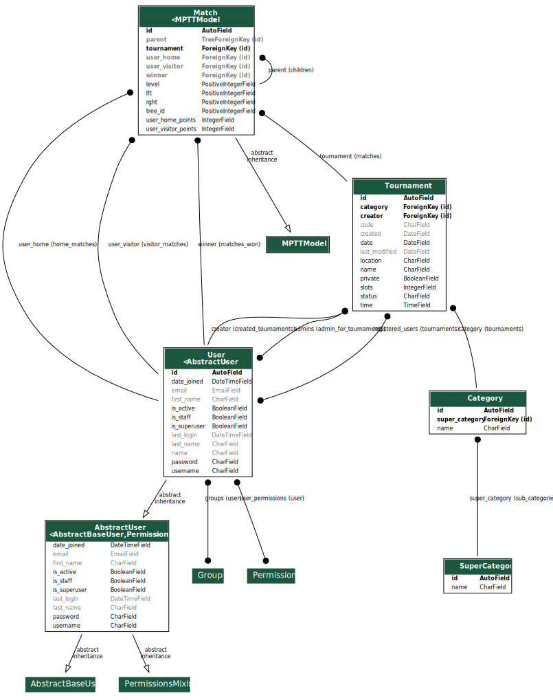

<!DOCTYPE html>
<html lang="en">
  <head>
    <meta charset="utf-8" />
    <meta name="viewport" content="width=device-width, initial-scale=1.0, maximum-scale=1.0, user-scalable=no" />

    <title>reveal-md</title>
    <link rel="stylesheet" href="./css/reveal.css" />
    <link rel="stylesheet" href="./css/theme/black.css" id="theme" />
    <link rel="stylesheet" href="./css/highlight/zenburn.css" />
    <link rel="stylesheet" href="./css/print/paper.css" type="text/css" media="print" />

  </head>
  <body>
    <div class="reveal">
      <div class="slides"><section  data-markdown><script type="text/template"># Tournament Manager

Egill Ragnarsson

Flóki Þorleifsson

Guðmundur Óli Norland

Hjalti Geir Garðarsson
</script></section><section  data-markdown><script type="text/template">
## Architecture & Design
</script></section><section ><section data-markdown><script type="text/template">
## Technology
</script></section><section data-markdown><script type="text/template">
## Backend

* Django
  * Backend framework written in python
* GraphQL
  * Open-source data query and manipulation language for APIs.
  * **Graphene:** library for building GraphQL APIs in Python easily
* PostgreSQL
  * Open-source relational database management system. 
</script></section><section data-markdown><script type="text/template">
## Frontend

* React
  * Frontend framework written in javascript
* Apollo Client 
  * A complete state management library for JavaScript apps.
</script></section></section><section  data-markdown><script type="text/template">
## Models

</img>
</script></section><section  data-markdown><script type="text/template">
## Key design decisions

* Users manage their own tournaments
* Hands off approach from the web service
* Addition of private and public tournaments
</script></section><section ><section data-markdown><script type="text/template">
## Software Process
</script></section><section data-markdown><script type="text/template">
* The core concept was decided upon pretty early own
* Development started out slow with the set up of our environment
</script></section></section><section ><section data-markdown><script type="text/template">
## Conclusion
</script></section><section data-markdown><script type="text/template">
## Success

* Clear vision shared among all members of the group
* Good communication
* Clean and modular backend API
* The scope of the project
</script></section><section data-markdown><script type="text/template">
## Failure

* Underestimation of the amount of time it takes to learn new technologies</script></section></section></div>
    </div>

    <script src="./js/reveal.js"></script>

    <script>
      function extend() {
        var target = {};
        for (var i = 0; i < arguments.length; i++) {
          var source = arguments[i];
          for (var key in source) {
            if (source.hasOwnProperty(key)) {
              target[key] = source[key];
            }
          }
        }
        return target;
      }

      // Optional libraries used to extend on reveal.js
      var deps = [
        { src: './plugin/markdown/marked.js', condition: function() { return !!document.querySelector('[data-markdown]'); } },
        { src: './plugin/markdown/markdown.js', condition: function() { return !!document.querySelector('[data-markdown]'); } },
        { src: './plugin/highlight/highlight.js', async: true, callback: function() { hljs.initHighlightingOnLoad(); } },
        { src: './plugin/zoom-js/zoom.js', async: true },
        { src: './plugin/notes/notes.js', async: true },
        { src: './plugin/math/math.js', async: true }
      ];

      // default options to init reveal.js
      var defaultOptions = {
        controls: true,
        progress: true,
        history: true,
        center: true,
        transition: 'default', // none/fade/slide/convex/concave/zoom
        dependencies: deps
      };

      // options from URL query string
      var queryOptions = Reveal.getQueryHash() || {};

      var options = extend(defaultOptions, {}, queryOptions);
    </script>


    <script>
      Reveal.initialize(options);
    </script>
  </body>
</html>
